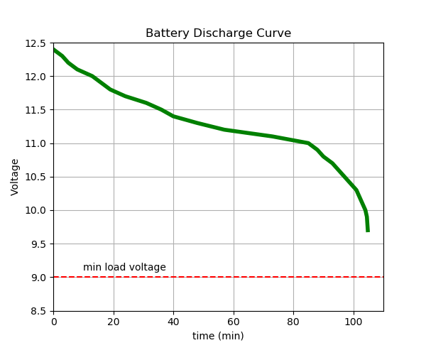

Drive Motor Power Monitoring
The drive train is powered by a 2 cell 1.8Ah battery. This battery voltage as read on the panel meter should not be allowed to drop below 6V (3V per cell). This will avoid causing damage to the battery. The Electronic Speed Control (ESC) has built-in cut-off circuitry, but that should be considered a last ditch fail-safe method. Also, make sure that the jumper on top of the ESC is in the LiPo position.
The LiPo battery has a separate 3-wire balanced charging cable, so it is not necessary to unplug the battery for charging.
Computer Power Monitoring
The processor is powered by a 3 cell 3.0Ah battery. The loaded battery level should not be allowed to go below 9V to avoid causing damage to the battery.
To be able to read this, the regulator display should be set to display the input voltage. If the display is not showing the inut voltage, press the 'set' button until it does, then press the 'ent' button.
The display also continuously displays the output current, so you can watch how hard the processor is working.
The following graph shows the discharge time under a constant heavy load (3A). This 3A draw covers the case of a heavily loaded cpu and gpu along with power to other hardware devices connected to the processor. The processor draws slightly less than 0.5A when idling. Moderate cpu activity typically draws less than 1A.
With a very heavily loaded cpu and gpu (approximately 3A draw), it should run for one hour and 45 minutes. With a lightly load cpu, then an excess of a 5 hour running time is possible.

This LiPo battery has a separate 4-wire balanced charging cable, so it is not necessary to unplug the battery for charging.
LiPo Battery Care and Usage
LiPo batteries provide a lot of power for their small size and weight, and as such see widespread use in many RC applications. They also require appropriate care to get the best performance and long life. This article on RC Helicopter Fun provides many insights and tips for LiPo battery usage.
Some facts about LiPo Batteries:
- Nominal voltage is 3.7V per cell
- Fully charged as high as 4.2V per cell
- 50% discharge is 3.85V per cell
- 80% discharge is 3.75V per cell
- Do not discharge below 3V per cell under load or damage will occur
- Store batteries charged but not fully charged (40-60% or 3.85V per cell open circuit resting voltage)